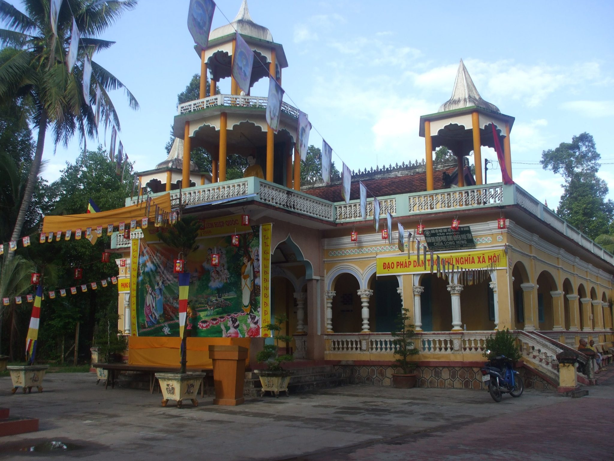
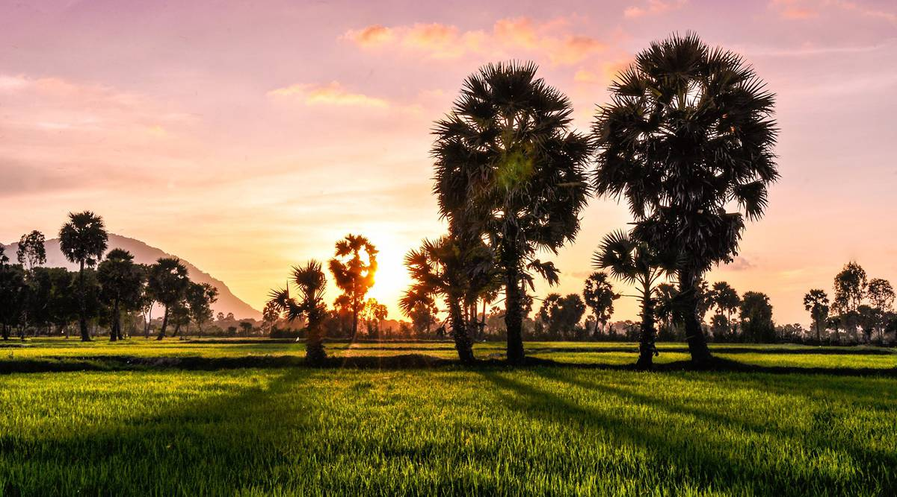
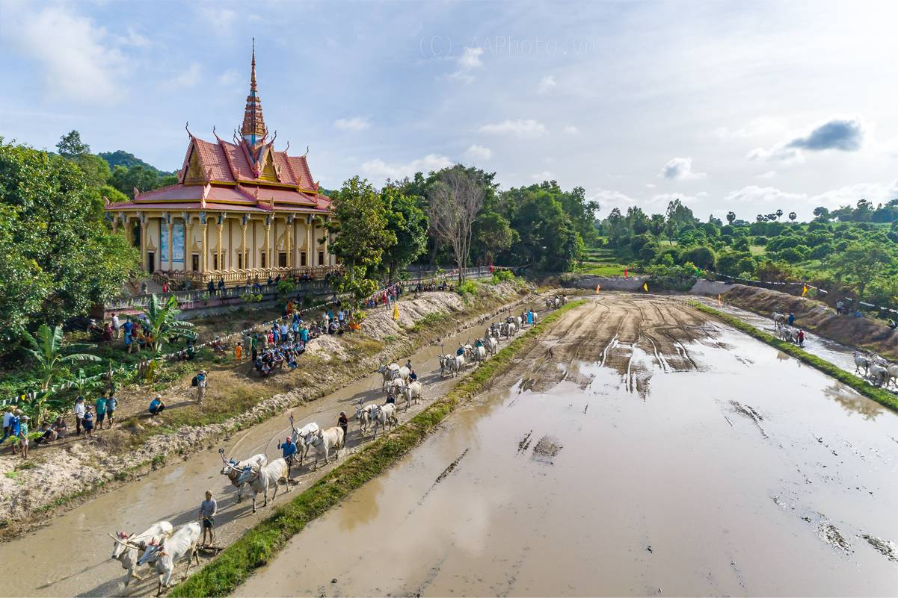
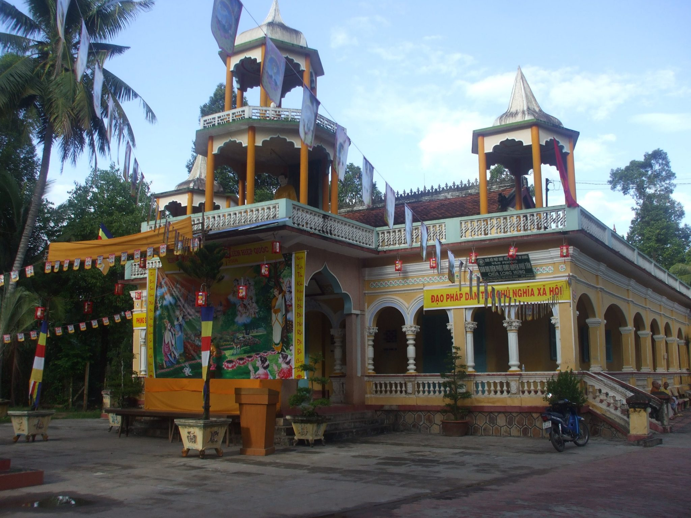
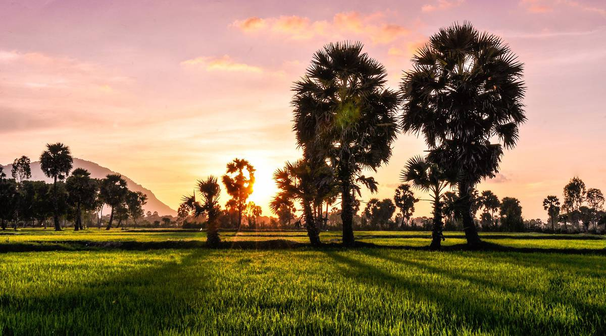
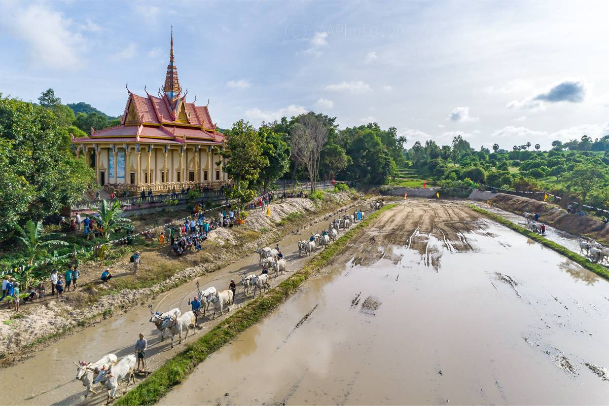

Văn hóa/Lịch sử
Ẩm thực: Ẩm thực của vùng đất An Giang mang hơi hướng miền quê sông nước với những món ăn làm từ cá và các loại rau đặc trưng ở vùng đất này, tiêu biểu có thể kể đến các món: bún cá Long Xuyên, gỏi sầu đâu, bánh canh bò viên Bảy Núi, ….
Công trình, kiến trúc: Kiến trúc của An Giang mang hình tượng của miền quê, ở An Giang cũng có rất nhiều công trình đồ sộ như: thánh đường Murabak, chùa Xà Tón, ….
Văn hóa: An Giang là tỉnh giàu truyền thống lịch sử và văn hóa, đa dân tộc, đa tôn giáo. Từ đó, đã hình thành những giá trị văn hóa phong phú, với nhiều lễ hội dân gian, các làng nghề truyền thống và nhiều công trình kiến trúc độc đáo. Tính đa dạng về văn hóa là một trong những thế mạnh của hệ giá trị sinh thái nhân văn, tạo nên nét đẹp rất riêng của nền văn hóa địa phương và của từng dân tộc tại An Giang.
 




